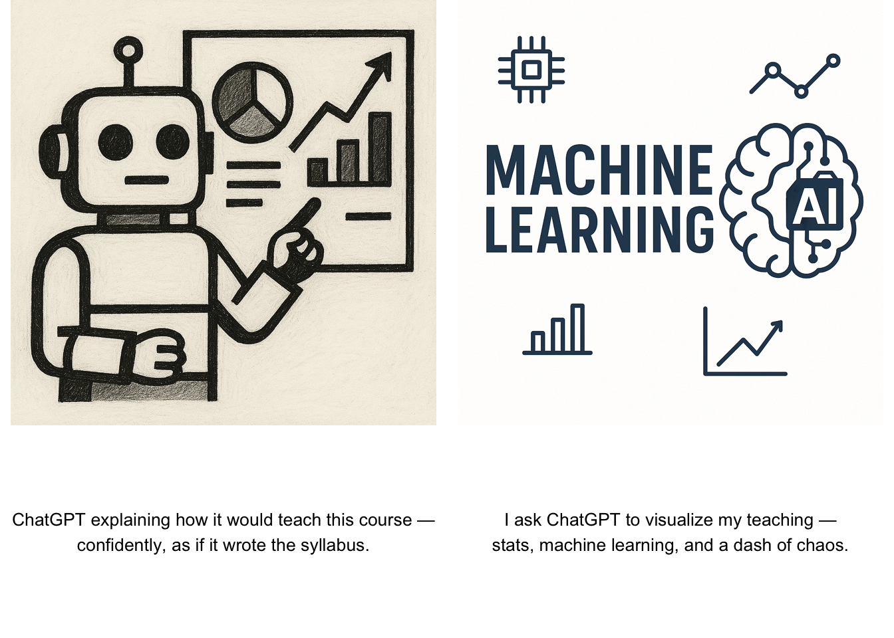

STA314H: Statistical Methods for Machine Learning I
Summer 2025, Course Website

Welcome to the course website for STA314 (Statistical Methods for Machine Learning I). This course is offered by the department of Statistical Sciences.
Machine learning (ML) is a set of techniques that allow computers to learn from data and experience, rather than requiring humans to specify the desired behaviour by hand. ML has become increasingly central both in statistics as an academic discipline, and in the data science industry. This course provides a broad introduction to commonly used ML methods, as well as the key statistical concepts underlying ML. It serves as a foundation for more advanced courses, such as STA414 (Statistical Methods for Machine Learning II).
We will cover statistical methods for supervised and unsupervised learning from data: training error, test error and cross-validation; classification, regression, and logistic regression; stochastic gradient descent’ principal components analysis; decision trees and random forests; k-means clustering and nearest neighbour methods; and building a nano-scale GPT model if time permitted. Computational tutorials will support the efficient application of these methods.

This
website is licensed under a
Creative
Commons Attribution-NonCommercial-ShareAlike 4.0 International
License.